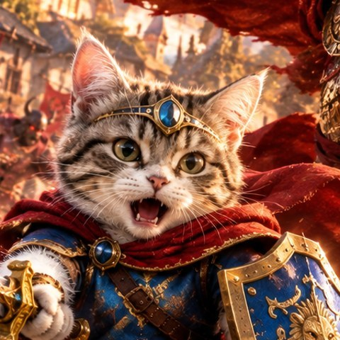
レオン猫の勇者
主人公
未熟だが、誰も見捨てない勇気を持つ。魔王を倒すのではなく救う道を選ぶ。
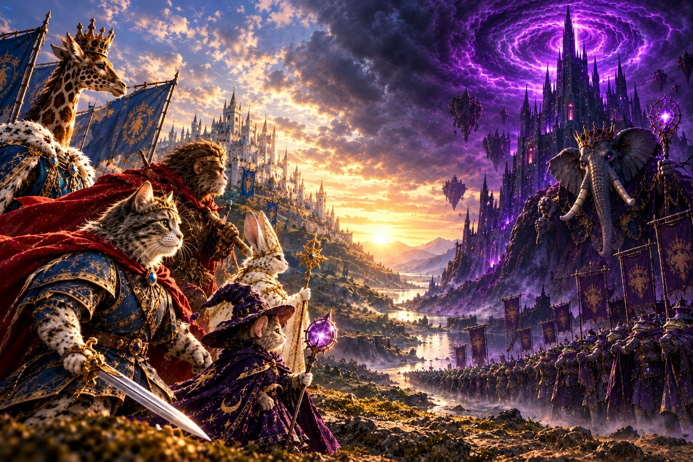
はるか昔、動物たちが暮らす世界には、七つの種族が存在していた。
勇気を持つ猫族、武勇に優れた猿族、魔法を操るネズミ族、王国を治めるキリン族、祈りの力を持つウサギ族。そして、魔王の軍勢に属するカエル族とゾウ族。
それぞれの種族は、長い年月をかけて平和を築いてきた。
しかしある夜、世界の中心にある「星のクリスタル」が黒く染まった。
クリスタルの力を奪ったのは、暗黒の城に君臨するゾウの魔王、ヴァルガント。
「この世界を一つにする。すべての国を、我が支配下に置くのだ！」
魔王の命令を受け、冷酷な幹部カエルのゲロニクスは、魔王軍を率いて各地へ進軍を開始した。
森は枯れ、川は濁り、空から星が消えていく。
世界に残された希望は、たった一つだった。
星のクリスタルに隠された、七つの力を目覚めさせること。
その使命を知らない一匹の猫が、運命の扉を開こうとしていた。
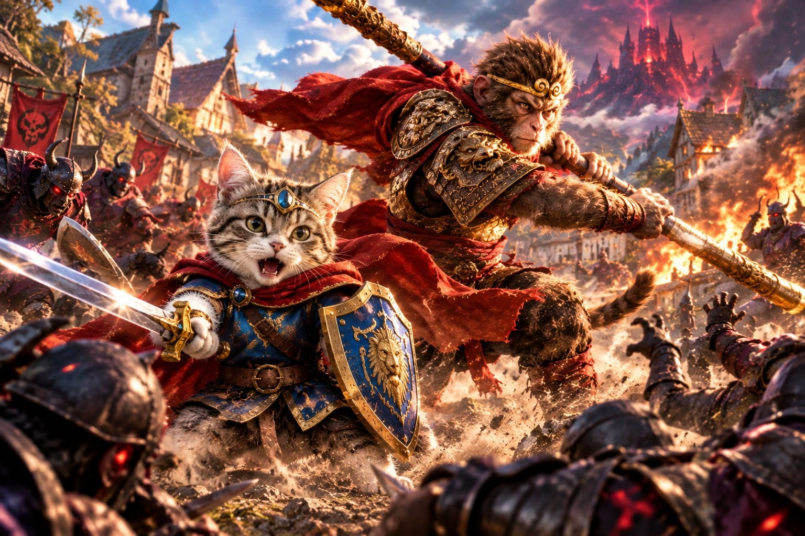
小さな村に住む猫の勇者、レオン。
剣の腕はまだ未熟だったが、困っている者を見捨てることができない、優しい心の持ち主だった。
ある日、村に魔王軍の兵士たちが押し寄せた。
「村を守るんだ！」
レオンは震える足で剣を構えた。しかし、敵の数はあまりにも多かった。
そのとき、空から赤いマントが舞い降りた。
「おいおい、猫一匹で戦うつもりか？」
現れたのは、金色の鎧を身にまとった猿の戦士、ゴウエンだった。
長い棒を振り回し、敵を次々と吹き飛ばす。
レオンはゴウエンと力を合わせ、村を守り抜いた。
戦いのあと、ゴウエンは言った。
「本当の勇者ってのは、強い奴のことじゃない。怖くても、誰かを守ろうとする奴のことさ」
レオンは、その言葉を胸に刻んだ。
そして二人は、魔王を止める旅へ出発した。
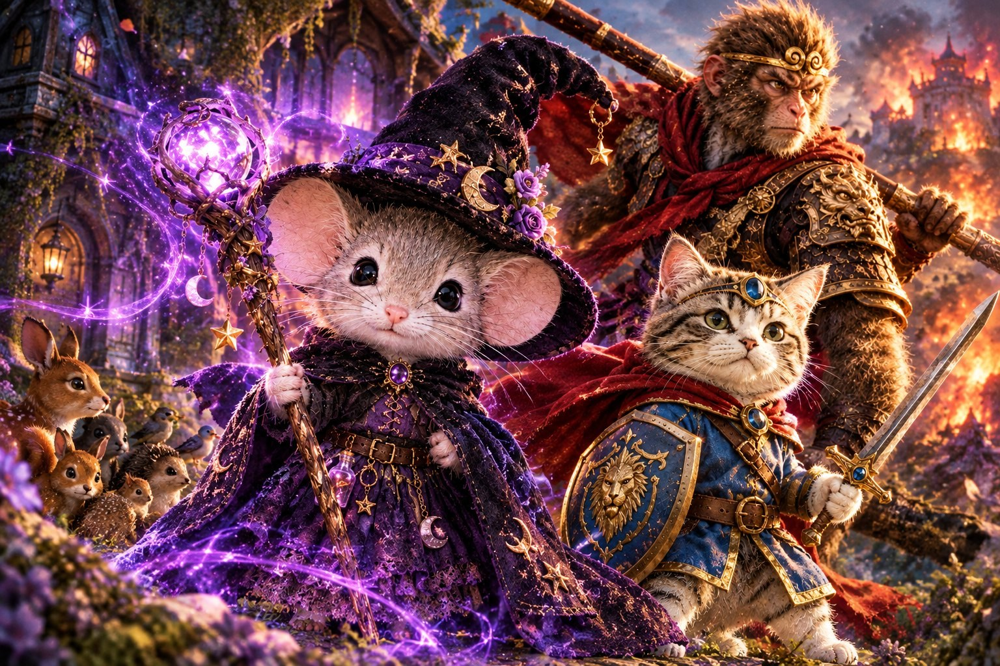
深い森の奥には、誰も近づかない古い魔法屋敷があった。
そこに暮らしていたのは、ネズミの魔女、ミルフィ。
彼女は天才的な魔法使いだったが、過去に自分の魔法で大切な森を傷つけてしまったことがあり、誰とも関わらずに暮らしていた。
レオンたちが屋敷を訪れると、ミルフィは杖を向けた。
「帰って！ 私はもう、誰のためにも魔法を使わない！」
だが、魔王軍が森に火を放ち、屋敷にも炎が迫っていた。
逃げ遅れた小動物たちを見たミルフィは、唇をかみしめた。
「……もう二度と失敗したくなかったのに」
それでも彼女は杖を掲げた。
「星よ、命を守る光となれ！」
紫色の光が森を包み込み、炎を消し去った。
魔法のあと、ミルフィは静かに言った。
「魔法が怖いんじゃない。自分の力を信じられないことが、怖かったのね」
こうして三人目の仲間が加わった。
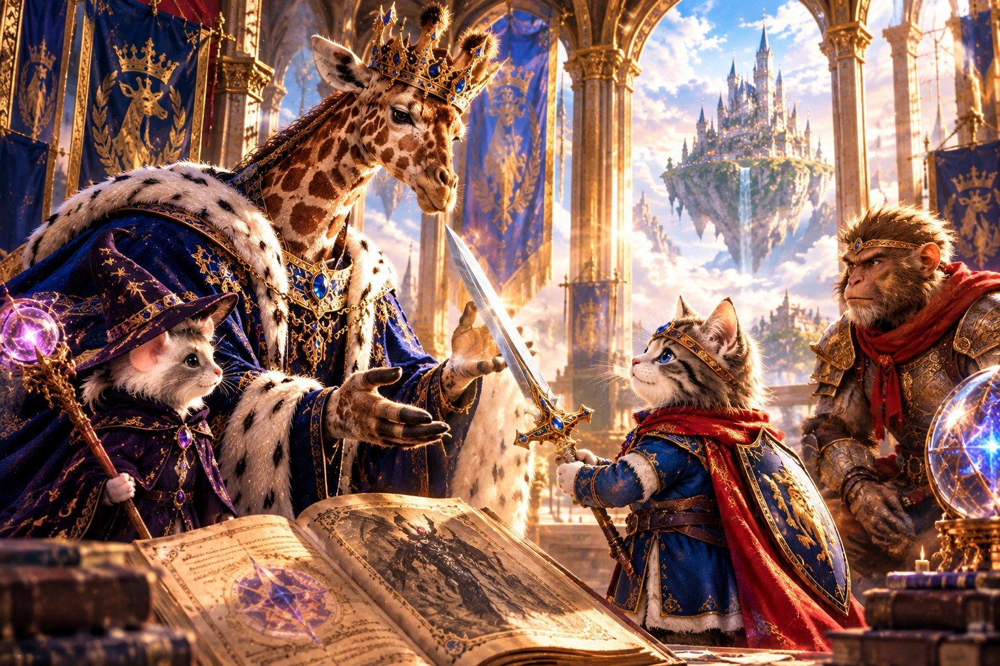
三人がたどり着いたのは、雲に届くほど高い塔を持つキリンの王国。
国を治めるのは、賢王アルディオンだった。
王は彼らを歓迎したが、星のクリスタルの話になると、表情を曇らせた。
「魔王ヴァルガントは、かつて世界を救った英雄だったのだ」
一同は驚いた。
遠い昔、ヴァルガントは大災害から動物たちを守るため、自らの命をかけて戦った。しかし、世界を救う力を求めるあまり、星のクリスタルの闇に心を支配されてしまったのだという。
「魔王は生まれながらの悪ではない。だが、今の彼を放置すれば、世界は滅びる」
王はレオンに、古代の剣を授けた。
「敵を倒す力だけでは、世界は救えぬ。何を守るために剣を振るうのか、それを忘れるな」
そして王は、秘密の地下書庫に眠る古文書を開いた。
そこには、魔王を倒す方法ではなく、魔王の中に残る光を取り戻す方法が記されていた。
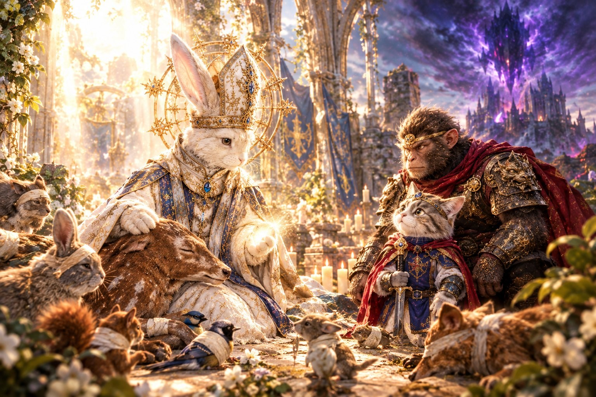
魔王の城へ向かう途中、一行は荒れ果てた聖堂にたどり着いた。
そこで出会ったのは、ウサギの聖者、セラフィム。
彼は傷ついた動物たちを治療し、誰に対しても優しく接していた。
ゴウエンは不思議そうに尋ねた。
「魔王軍の兵士まで助けるのか？ そいつらは俺たちを殺そうとしたんだぞ」
聖者は穏やかに答えた。
「傷ついた命に、敵も味方もありません」
しかし、聖者の力にも限界があった。
星のクリスタルが黒く染まったことで、世界を包む生命の光が弱まっていたのだ。
セラフィムはレオンに告げた。
「魔王を倒すことはできるでしょう。でも、それだけでは世界に残った憎しみは消えません」
レオンは剣を握りしめた。
敵を倒すだけでは終わらない戦いがある。それを、初めて理解したのだった。
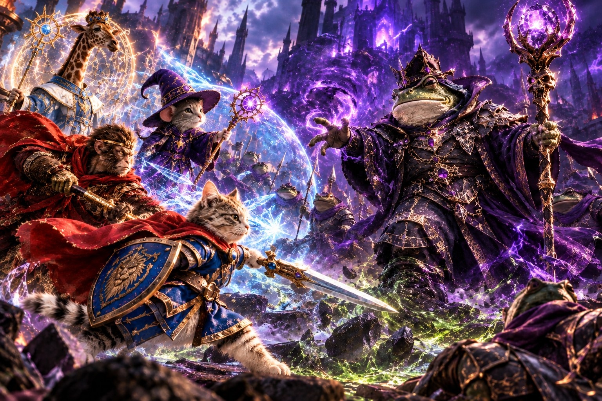
ついに一行は、魔王の領土へ足を踏み入れた。
そこを守るのは、魔王の側近であるカエルの幹部、ゲロニクス。
黒と紫の鎧をまとい、紫水晶の杖を持つ彼は、魔王軍の中でも恐れられる存在だった。
「ここから先は、魔王様の聖域だ。生きて帰れると思うな！」
ゲロニクスの魔法で、地面から巨大な毒の沼が広がった。
ゴウエンが飛び込み、敵の兵士たちを引きつける。ミルフィは魔法で沼を凍らせ、セラフィムは仲間たちを守る結界を張った。
その隙にレオンが駆け抜ける。
しかし、ゲロニクスの杖がレオンを吹き飛ばした。
「なぜ抵抗する？ 魔王様の力の前では、すべてが無意味だ！」
レオンは立ち上がり、尋ねた。
「お前は、本当に魔王を信じているのか？」
一瞬、ゲロニクスの動きが止まった。
彼はかつて、弱い自分を救ってくれた魔王に忠誠を誓ったのだった。
だが今の魔王は、かつての優しさを失っていた。
「黙れ！ 私は……魔王様を裏切るわけにはいかない！」
ゲロニクスは最後の魔法を放った。
その瞬間、ミルフィが叫んだ。
「あなたの忠誠心まで、魔王の闇に捧げる必要はないわ！」
レオンの剣が紫色の魔法を切り裂く。
ゲロニクスは膝をついた。
レオンは、とどめを刺さなかった。
「お前が本当に守りたいものを、もう一度考えてくれ」
長い沈黙のあと、ゲロニクスは杖を下ろした。
「……魔王様を、救うことができるのか？」
「一緒に探そう」
こうして、魔王の幹部は最後の仲間となった。
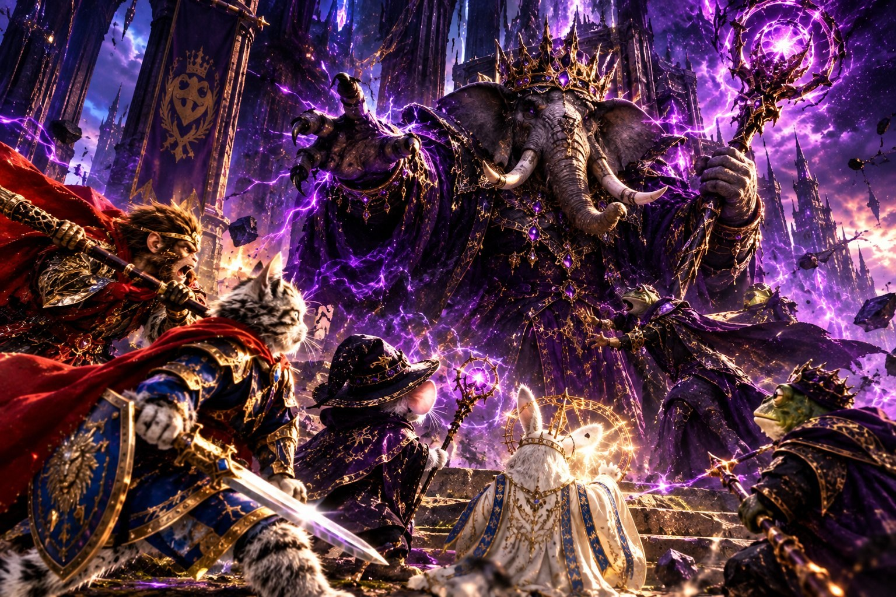
暗黒の城の最奥。
そこには、巨大な玉座に座るゾウの魔王、ヴァルガントがいた。
黒と紫の豪華な衣装。黄金の冠。紫色に輝く杖。
その姿は圧倒的だった。
「よくここまで来たな、小さき者たちよ」
魔王が立ち上がると、城全体が震えた。
「人々は弱い。争い、裏切り、奪い合う。ならば、私がすべてを支配すればいい。誰も逆らえぬ世界なら、争いもなくなる！」
ゴウエンは叫んだ。
「自由を奪って作る平和なんて、平和じゃねえ！」
魔王は杖を振り下ろした。
黒い稲妻が走り、仲間たちは次々と倒れていく。
レオンは剣を構えたが、魔王の力に押し戻された。
そのとき、ゲロニクスが魔王の前に立った。
「魔王様……もう、おやめください！」
「貴様まで私に逆らうのか！」
「私は、あなたに救われた日を忘れていません。だからこそ、今のあなたを止めたいのです！」
魔王の目が揺れた。
しかし、クリスタルの闇はさらに強くなり、魔王の体を黒い光が包み込んだ。
「黙れ！ 私はもう、後戻りできぬのだ！」
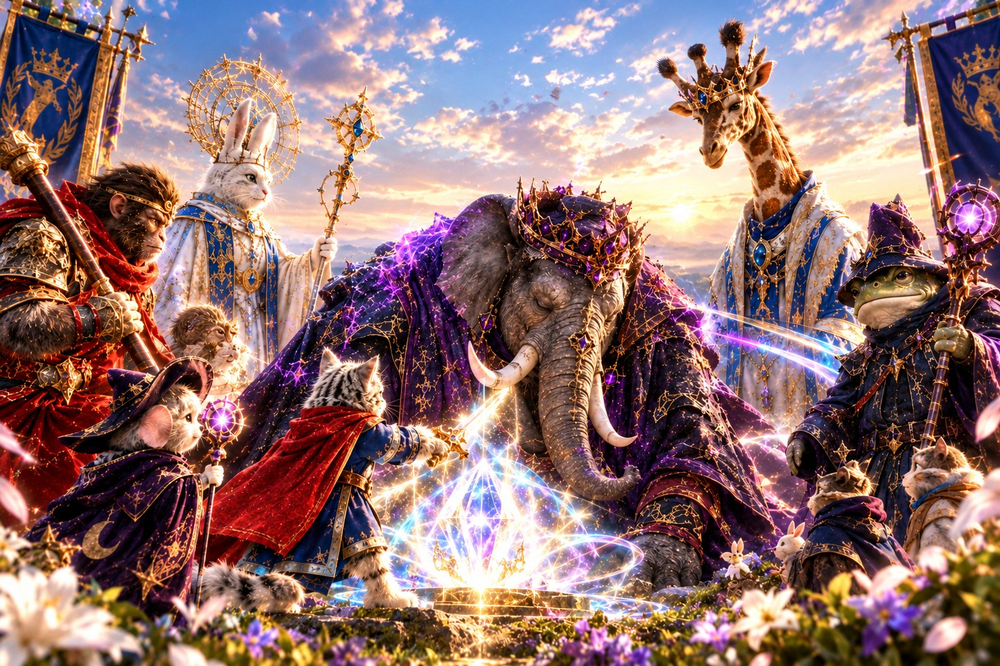
レオンは、倒れた仲間たちを見た。
剣を握る手は震えていた。
勝てる見込みはない。
それでも、レオンは剣を下ろさなかった。
「魔王！ あなたが昔、世界を救ったのなら……あなたの中には、まだ守りたいものが残っているはずだ！」
レオンの剣が、かすかな金色の光を放った。
ゴウエンが立ち上がり、棒を地面に突き立てる。
「俺の力は、お前を守るために使う！」
ミルフィが杖を掲げる。
「私の魔法は、命を奪うためじゃない。未来をつくるためにある！」
遠くの王国では、キリンの王アルディオンが祈りを捧げていた。
聖堂では、ウサギの聖者セラフィムが最後の生命の光を送り出した。
ゲロニクスもまた、魔王に向かって杖を掲げる。
七つの力が、一つの光となって集まった。
勇気。武勇。知恵。王の責任。慈悲。忠誠。
そして、過ちを認める勇気。
光はレオンの剣に宿り、星のクリスタルを包み込んだ。
「こんな……はずでは……！」
魔王の体から、黒い闇が剥がれ落ちていく。
その奥から現れたのは、疲れ果てた一頭のゾウだった。
ヴァルガントは膝をつき、震える声でつぶやいた。
「私は……世界を守りたかっただけなのだ……」
レオンは剣を収めた。
「だったら、もう一度、一緒に守りましょう」
魔王は涙を流した。
長い年月にわたり世界を覆っていた闇が消え、星のクリスタルは再び輝きを取り戻した。
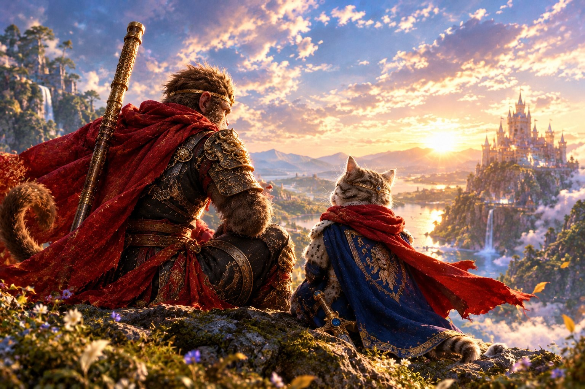
戦いが終わったあと、世界には少しずつ平和が戻ってきた。
キリンの王アルディオンは、種族の違いを越えて話し合うための評議会を設立した。
猿の戦士ゴウエンは、若い戦士たちに武術を教えた。
ネズミの魔女ミルフィは、誰もが安全に学べる魔法学校を開いた。
ウサギの聖者セラフィムは、傷ついた者たちの心を癒やし続けた。
カエルのゲロニクスは、かつて自分が仕えた魔王とともに、壊れた国を再建する道を選んだ。
そしてゾウのヴァルガントは、王の座を離れ、自らが犯した過ちと向き合いながら、世界の復興に力を尽くした。
猫の勇者レオンは、再び旅に出た。
彼の隣には、いつもの仲間たちがいる。
「なあ、レオン。次はどこへ行くんだ？」
ゴウエンが尋ねた。
レオンは笑って答えた。
「まだ誰も知らない場所へ。世界には、救わなきゃいけないものが、きっとたくさんあるから」
七人は朝日に向かって歩き始めた。
彼らの物語は、まだ終わらない。
本当の勇者とは、悪を倒す者ではない。誰かが再び光を見つけられるように、手を差し伸べる者なのだ。
—— 猫の勇者と魔王の国・完 ——

主人公
未熟だが、誰も見捨てない勇気を持つ。魔王を倒すのではなく救う道を選ぶ。
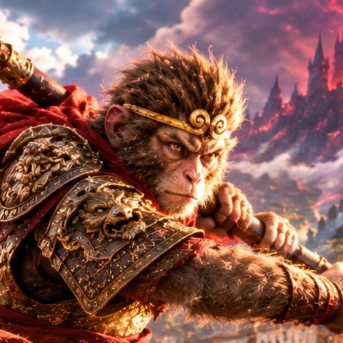
前衛・武闘家
豪快で仲間思い。圧倒的な武術で仲間を守る。
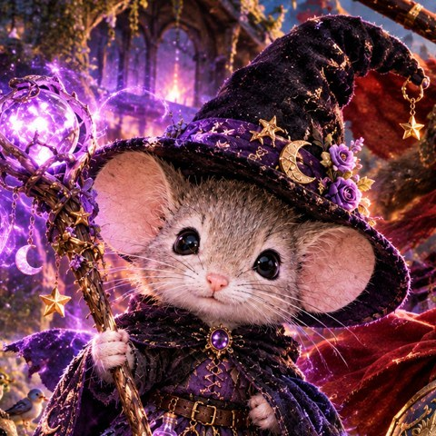
魔法使い
強大な魔力を持つが、過去の失敗を恐れている。仲間と出会い、自分の力を信じ直す。
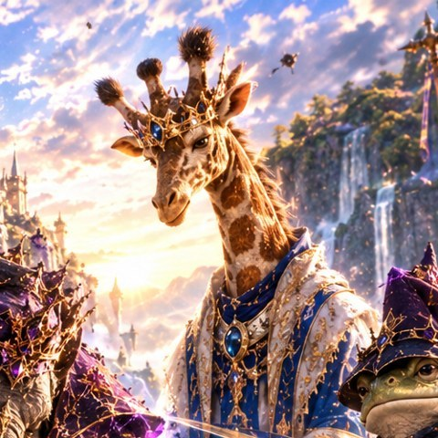
賢者・王国の守護者
世界の歴史とクリスタルの秘密を知る賢王。主人公たちに進むべき道を示す。
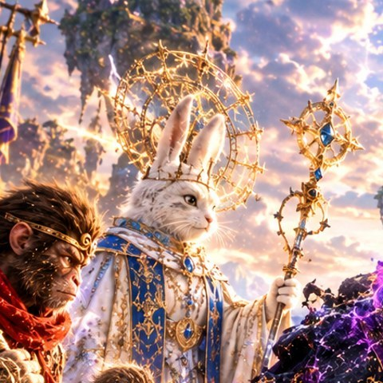
回復・守護
敵味方を区別せず命を救う。仲間に慈悲の意味を教える。
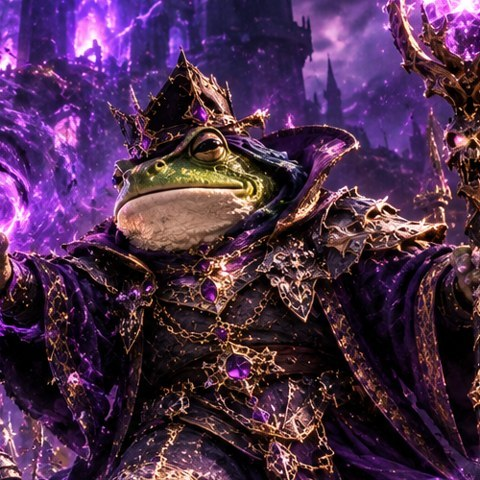
敵から仲間へ
魔王への忠誠心と、正しいと信じたい心の間で葛藤する。最後には魔王を救うために立ち上がる。
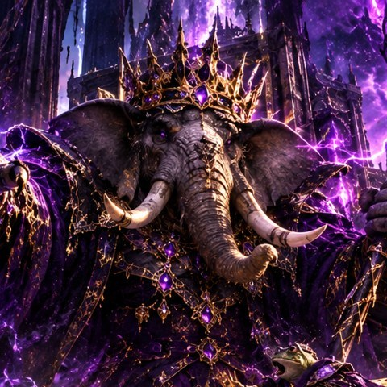
最大の敵・悲劇の英雄
世界を守ろうとした過去を持つ。支配による平和を求め、闇に心を奪われた。